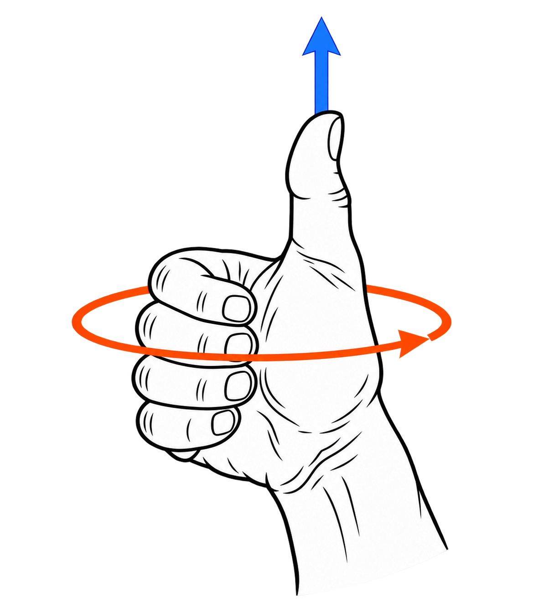

At the time of writing this, I am leading an undergraduate in a directed reading on the book "Electricity and Magnetism for Mathematicians" by Walter Garrity. The book is really good and I highly recommend it to anybody interested in math or physics. Another book that we're using is "A Visual Introduction to Differential Forms" by Jon Pierre Fortney, also very good. This post includes all of the simulations and figures that I am creating to help supplement the math.
Vector Calculus
A vector field $F$ on $\R^n$ assigns to each point $\mathbf x\in \R^n$, a vector $F(\mathbf x)\in \R^n$. For a a point $\mathbf x$ the divergence of $F$ is a number that tells us how much the vector field is pointing out away from $\mathbf x$. If we the region of radius $r$ around around a point $\mathbf x$ is $D_r$, the divergence is \[ \operatorname{div}F(\mathbf x)=\;\lim_{r\to 0}\;\frac{1}{\operatorname{area}(D_r)}\oint_{\partial D_r} F\cdot\mathbf n\,ds .\] The integral on the right side is measuring the flow of $F$ out of the region, and the dividing by the area accounts for the shrinking of the region. Te definition above is informative, but the definition that is easier to work with is \[ \operatorname{div} F = \nabla \cdot F = \sum_{i=1}^n \frac{\partial F^i}{\partial x^i}. \] where \[ \nabla = \left(\frac{\partial}{\partial x^1}, \dots, \frac{\partial}{\partial x^n}\right). \] In summary, the divergence of a vector field in $\R^n$ assigns to each point in $\R^n$ a number which measures the inward/outward flow of the vector field at that point. More flow out is positive, more flow in is negative, which you can see below for $\R^2$.
Divergence of a vector field assigns a scalar to each point. For vector fields $F$ on $\R^3$, there is an operation called $\operatorname{curl}$ which creates another vector field. It measures how much the vector field $F$ is curling, and assigns a vector orthogonal to the curling, according to the right hand rule. The curl integral definition is similar to the divergence definition, the curl in the direction $\mathbf n$ measures how much $F$ is curling in a circle around in the plane orthogonal to $\mathbf n$, \[ (\operatorname{curl} F)(\mathbf x)\cdot\mathbf n \;=\; \lim_{r\to 0}\;\frac{1}{\operatorname{area}(D_r)}\oint_{\partial D_r(\mathbf x,\mathbf n)} F\cdot\mathbf t\,ds . \] The dot product with $\mathbf t$ measures the tangent part of $F$ around the circle $\partial D_r$, so this integral is larger when more of $F$ is curling around the circle.

In this 2D slice, the curl points up out of the screen for counterclockwise rotation and into the screen for clockwise rotation. The faster the wheel spins, the more the vector field is curling. Move the wheel around in the different fields to see the curl of different vector fields.
Differential Forms
Differential forms measure volume. The integral